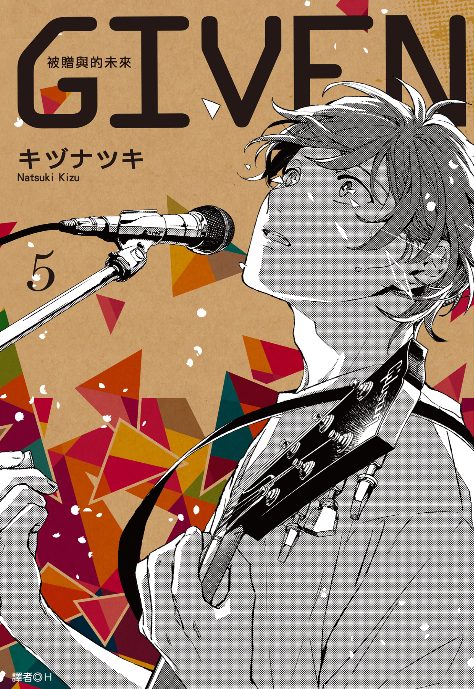
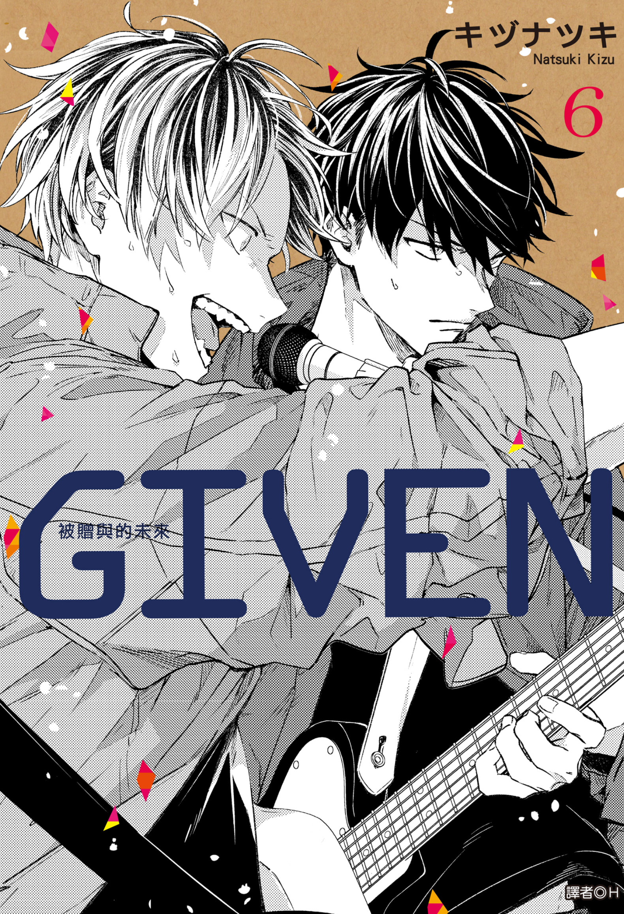

第一集
真冬遇見立夏，音樂與情感的序章展開。
第二集
真冬第一次上台演出，將對昔日前男友的思念寫入歌中傾瀉而出。

第三集
立夏真冬開始交往。

第四集
春秋雨虐戀篇章開始。春單戀著秋，秋雨兩人吵架分居。

第五集
透過真冬的歌聲，秋雨終於看開並和平分手。結尾春秋相戀成為戀人。

第六集
立夏被邀請去syh代打，柊將真冬的前男友所寫的歌曲交給立夏讓他完成歌曲。

第七集
柊跟玄純成為情侶，而真冬以為自己又再度被同伴及音樂拋下。

第八集
真冬繼續迷茫，雨月再次現身。

第九集
立夏終於將由紀未能完成的歌曲演唱給真冬，遲遲未能解開的心結就此消散。